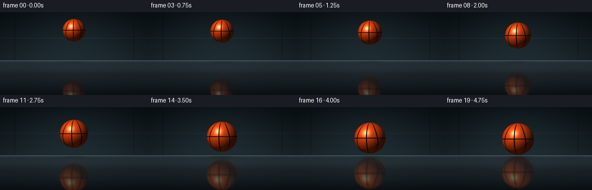
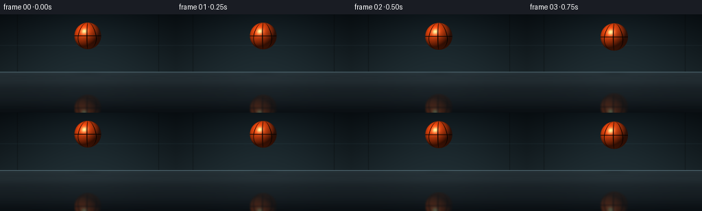
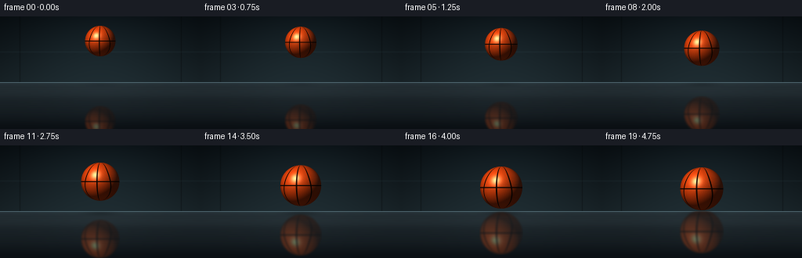
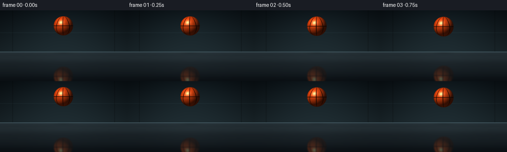

CODING AGENTS AS PIXEL WORLD MODELS
traex/DeepSeek-V4.1-Flash · phygen_064
点击播放 · 原生 RGB 像素
逐轮保存的候选
回放视频、检查图与代码变化。
每份候选均可单独播放。实际图片检查记录在下方工具轨迹中。
候选 01播放与检查图
点击播放 · 原生 RGB 像素


展开代码变化
--- 上一保存版本 +++ 本次保存版本 @@ -0,0 +1,262 @@ +from pathlib import Path + +import numpy as np +from PIL import Image, ImageFilter + +import artifact_io + + +WIDTH = 256 +HEIGHT = 144 +FRAMES = 20 +FPS = 4.0 +SS = 4 + +CASE_DIR = Path(__file__).resolve().parent + + +def smoothstep(x): + return x * x * (3.0 - 2.0 * x) + + +def make_background(surface_y): + h, w = HEIGHT, WIDTH + y, x = np.mgrid[0:h, 0:w].astype(np.float32) + + top = np.array([8.0, 14.0, 18.0], dtype=np.float32) + horizon = np.array([27.0, 39.0, 44.0], dtype=np.float32) + wall_t = np.clip(y / surface_y, 0.0, 1.0)[..., None] + rgb = top * (1.0 - wall_t) + horizon * wall_t + + cx, cy = 128.0, 34.0 + glow = np.exp(-(((x - cx) / 102.0) ** 2 + ((y - cy) / 61.0) ** 2)) + rgb += glow[..., None] * np.array([7.0, 10.0, 10.5], dtype=np.float32) + + vignette = np.clip(((x - 128.0) / 150.0) ** 2, 0.0, 1.0) + rgb *= (1.0 - 0.24 * vignette)[..., None] + + # Quiet studio-wall panel seams. + for panel_x in (25, 231): + seam = np.exp(-((x - panel_x) / 0.8) ** 2) + rgb *= (1.0 - 0.24 * seam)[..., None] + rail = np.exp(-((y - 45.0) / 0.8) ** 2) + rgb += rail[..., None] * np.array([5.0, 7.0, 7.5], dtype=np.float32) + + floor = y >= surface_y + depth = np.clip((y - surface_y) / (h - 1.0 - surface_y), 0.0, 1.0) + floor_rgb = ( + np.array([34.0, 44.0, 49.0], dtype=np.float32) * (1.0 - depth[..., None]) + + np.array([10.0, 15.0, 19.0], dtype=np.float32) * depth[..., None] + ) + + # Fine, anisotropic brushing plus a few broader rolled-metal bands. + yf = y / 1.0 + brush = ( + 0.42 * np.sin(yf * 2.75 + 0.4) + + 0.25 * np.sin(yf * 6.31 + 1.7) + + 0.18 * np.sin(yf * 12.9 + 2.4) + ) + floor_rgb += (brush * 2.2)[..., None] * np.array([0.70, 0.82, 0.86], dtype=np.float32) + band = np.exp(-((y - 98.0) / 7.0) ** 2) + 0.55 * np.exp(-((y - 121.0) / 11.0) ** 2) + floor_rgb += band[..., None] * np.array([4.2, 5.3, 5.5], dtype=np.float32) + + # Broad sheen from the overhead studio source. + sheen_x = np.exp(-((x - 128.0) / 72.0) ** 2) + sheen_y = np.exp(-(np.maximum(y - surface_y, 0.0) / 49.0)) + floor_rgb += (sheen_x * sheen_y * 7.5)[..., None] * np.array( + [0.56, 0.72, 0.78], dtype=np.float32 + ) + + # The polished edge catches a narrow cool highlight. + edge = np.exp(-((y - surface_y + 0.3) / 0.75) ** 2) + floor_rgb += edge[..., None] * np.array([39.0, 50.0, 53.0], dtype=np.float32) + just_below = np.exp(-(np.maximum(y - surface_y, 0.0) / 2.4)) + floor_rgb += just_below[..., None] * np.array([7.0, 10.0, 11.0], dtype=np.float32) + + rgb[floor] = floor_rgb[floor] + return np.clip(rgb, 0.0, 255.0) + + +def render_ball(center_x, center_y, radius, rotation): + """Render a transparent basketball sprite in supersampled coordinates.""" + x0 = max(0, int(np.floor(center_x - radius - 3))) + y0 = max(0, int(np.floor(center_y - radius - 3))) + x1 = min(WIDTH * SS, int(np.ceil(center_x + radius + 3))) + y1 = min(HEIGHT * SS, int(np.ceil(center_y + radius + 3))) + yy, xx = np.mgrid[y0:y1, x0:x1].astype(np.float32) + + nx = (xx + 0.5 - center_x) / radius + ny = (yy + 0.5 - center_y) / radius + rr = nx * nx + ny * ny + inside = rr <= 1.0 + nz = np.sqrt(np.maximum(1.0 - rr, 0.0)) + + cos_r, sin_r = np.cos(rotation), np.sin(rotation) + tx = nx * cos_r + nz * sin_r + tz = -nx * sin_r + nz * cos_r + lon = np.arctan2(tx, np.maximum(tz, 1e-5)) + lat = np.arcsin(np.clip(ny, -1.0, 1.0)) + + def angular_distance(a, b): + return np.abs(np.arctan2(np.sin(a - b), np.cos(a - b))) + + # Four black channels: an equator, a center meridian, and two bowed side arcs. + center_seam = angular_distance(lon, 0.0) + side_offset = 0.73 + 0.12 * np.sin(lat * 1.7) + left_seam = angular_distance(lon, side_offset) + right_seam = angular_distance(lon, -side_offset) + equator = np.abs(lat) + seam_distance = np.minimum.reduce( + [center_seam, left_seam, right_seam, equator * 1.35] + ) + seam = np.clip((0.041 - seam_distance) / 0.013, 0.0, 1.0) + + # Fine leather grain, based on the sphere surface rather than screen pixels. + grain = ( + np.sin(73.0 * tx + 29.0 * ny + 41.0 * nz) + + np.sin(47.0 * tx - 61.0 * ny + 37.0 * nz) + + np.sin(109.0 * tx + 17.0 * ny - 53.0 * nz) + ) / 3.0 + grain = 1.0 + 0.035 * grain + + light = np.array([-0.52, -0.70, 0.68], dtype=np.float32) + light /= np.linalg.norm(light) + view = np.array([0.0, 0.0, 1.0], dtype=np.float32) + half = light + view + half /= np.linalg.norm(half) + diffuse = np.clip(nx * light[0] + ny * light[1] + nz * light[2], 0.0, 1.0) + specular = np.clip(nx * half[0] + ny * half[1] + nz * half[2], 0.0, 1.0) ** 42.0 + soft_specular = np.clip(nx * half[0] + ny * half[1] + nz * half[2], 0.0, 1.0) ** 10.0 + + orange = np.array([0.86, 0.255, 0.048], dtype=np.float32) + leather = orange[None, None, :] * grain[..., None] + shade = (0.20 + 0.92 * diffuse)[..., None] + color = leather * shade + + # Warm floor bounce and a cool rim keep the dark edge readable. + bounce = np.clip(ny, 0.0, 1.0) ** 2 + color += bounce[..., None] * np.array([0.08, 0.025, 0.008], dtype=np.float32) + rim = np.clip(nx * 0.74 + ny * -0.20 + nz * 0.30, 0.0, 1.0) ** 7 + color += rim[..., None] * np.array([0.055, 0.085, 0.10], dtype=np.float32) + color += (soft_specular * 0.12)[..., None] * np.array([1.0, 0.78, 0.54], dtype=np.float32) + color += (specular * 0.68)[..., None] * np.array([1.0, 0.94, 0.78], dtype=np.float32) + + seam_shade = 0.38 + 0.44 * diffuse + seam_color = np.array([0.070, 0.028, 0.012], dtype=np.float32)[None, None, :] + seam_color = seam_color * seam_shade[..., None] + seam_color += (specular * 0.07)[..., None] * np.array([0.8, 0.62, 0.42], dtype=np.float32) + color = color * (1.0 - seam[..., None]) + seam_color * seam[..., None] + + # Slight edge darkening improves the round silhouette. + edge_ao = 1.0 - 0.19 * np.clip(1.0 - nz, 0.0, 1.0) ** 1.5 + color *= edge_ao[..., None] + alpha = inside.astype(np.float32) + rgba = np.dstack([np.clip(color, 0.0, 1.0) * 255.0, alpha * 255.0]).astype(np.uint8) + return (x0, y0, x1, y1), rgba + + +def alpha_composite(base, sprite, x0, y0): + x1 = x0 + sprite.shape[1] + y1 = y0 + sprite.shape[0] + sx0, sy0 = max(0, -x0), max(0, -y0) + sx1 = sprite.shape[1] - max(0, x1 - base.shape[1]) + sy1 = sprite.shape[0] - max(0, y1 - base.shape[0]) + x0c, y0c = max(0, x0), max(0, y0) + x1c, y1c = min(base.shape[1], x1), min(base.shape[0], y1) + if x1c <= x0c or y1c <= y0c: + return + src = sprite[sy0:sy1, sx0:sx1].astype(np.float32) + alpha = src[..., 3:4] / 255.0 + dst = base[y0c:y1c, x0c:x1c] + dst[:] = src[..., :3] * alpha + dst * (1.0 - alpha) + + +def add_contact_shadow(background, center_x, surface_y, strength): + h, w = HEIGHT, WIDTH + y, x = np.mgrid[0:h, 0:w].astype(np.float32) + ellipse = ((x - center_x) / 29.0) ** 2 + ((y - (surface_y + 2.4)) / 4.5) ** 2 + shadow = np.exp(-ellipse * 2.2) * (0.22 * strength) + floor_mask = (y >= surface_y).astype(np.float32) + background *= (1.0 - shadow * floor_mask)[..., None] + + +def render_frame(index): + t = index / (FRAMES - 1) + eased = smoothstep(t) + surface_y = 84.0 + + center_x = 128.0 + center_y = 31.5 + 24.0 * eased + radius = 19.5 + 8.0 * eased + rotation = 0.06 + 0.18 * eased + + background = make_background(surface_y) + add_contact_shadow(background, center_x, surface_y, 0.35 + 0.65 * eased) + + # Supersample the complete frame so the sphere edge and fine seams stay clean. + base_hi = np.repeat(np.repeat(background, SS, axis=0), SS, axis=1) + bbox, sprite = render_ball( + center_x * SS, center_y * SS, radius * SS, rotation + ) + x0, y0, _, _ = bbox + alpha_composite(base_hi, sprite, x0, y0) + + # The floor reflection is the same sprite, mirrored about the surface plane. + reflected = np.flipud(sprite) + blur_rgb = Image.fromarray(reflected[..., :3]).filter( + ImageFilter.GaussianBlur(radius=1.15 * SS) + ) + blur_a = Image.fromarray(reflected[..., 3]).filter( + ImageFilter.GaussianBlur(radius=1.15 * SS) + ) + reflected = np.dstack( + [np.asarray(blur_rgb), np.asarray(blur_a)] + ).astype(np.uint8) + + reflect_top = int(round(2.0 * surface_y * SS - (center_y + radius) * SS)) + floor_top = int(surface_y * SS) + clip_y = max(0, floor_top - reflect_top) + if clip_y < reflected.shape[0]: + reflected = reflected[clip_y:] + reflect_top += clip_y + + # Tint, fade, and metallic attenuation are applied only inside the floor. + ref = reflected.astype(np.float32) + ref_alpha = ref[..., 3:4] / 255.0 + yy = np.arange( + reflect_top, reflect_top + ref.shape[0], dtype=np.float32 + )[:, None, None] + depth = np.clip((yy / SS - surface_y) / 60.0, 0.0, 1.0) + fade = (0.58 - 0.25 * depth) * ref_alpha + tinted = ref[..., :3] * np.array([0.79, 0.88, 0.92], dtype=np.float32) + tinted += np.array([4.0, 7.0, 9.0], dtype=np.float32) + + x_start = max(0, x0) + x_end = min(WIDTH * SS, x0 + reflected.shape[1]) + y_start = max(0, reflect_top) + y_end = min(HEIGHT * SS, reflect_top + reflected.shape[0]) + src_x0 = x_start - x0 + src_y0 = y_start - reflect_top + ref_crop = tinted[ + src_y0 : src_y0 + (y_end - y_start), + src_x0 : src_x0 + (x_end - x_start), + ] + alpha_crop = fade[ + src_y0 : src_y0 + (y_end - y_start), + src_x0 : src_x0 + (x_end - x_start), + ] + dst = base_hi[y_start:y_end, x_start:x_end] + dst[:] = ref_crop * alpha_crop + dst * (1.0 - alpha_crop) + + frame = base_hi.reshape(HEIGHT, SS, WIDTH, SS, 3).mean(axis=(1, 3)) + frame = np.clip(frame + 0.45, 0.0, 255.0) + return frame.astype(np.uint8) + + +def main(): + frames = np.stack([render_frame(i) for i in range(FRAMES)]) + artifact_io.save(frames, CASE_DIR) + + +if __name__ == "__main__": + main()
候选 02播放与检查图
点击播放 · 原生 RGB 像素


展开代码变化
--- 上一保存版本
+++ 本次保存版本
@@ -213,7 +213,10 @@
[np.asarray(blur_rgb), np.asarray(blur_a)]
).astype(np.uint8)
- reflect_top = int(round(2.0 * surface_y * SS - (center_y + radius) * SS))
+ # Account for the three-pixel transparent sprite margin on both sides.
+ reflect_top = int(
+ round(2.0 * surface_y * SS - (center_y + radius + 3.0) * SS)
+ )
floor_top = int(surface_y * SS)
clip_y = max(0, floor_top - reflect_top)
if clip_y < reflected.shape[0]:
可观测工具轨迹
实际执行的命令与返回图片。
命令 1exit 0
/bin/bash -c "pwd && rg --files -g 'prompt.txt' -g 'GENERATION_RULES.md' -g 'task_spec.json' -g '"'!**/.git/**'"'"
命令 2exit 0
/bin/bash -c "git status --short && find . -maxdepth 2 -type f -printf '%p\\n' | sort | head -200"
命令 3exit 0
/bin/bash -c 'cat prompt.txt'
命令 4exit 0
/bin/bash -c 'cat GENERATION_RULES.md'
命令 5exit 0
/bin/bash -c 'cat task_spec.json'
命令 6exit 0
/bin/bash -c "sed -n '1,260p' artifact_io.py && printf '\\n--- player ---\\n' && sed -n '1,260p' player_template.html"
命令 7exit 0
/bin/bash -c "python - <<'PY'
import numpy, PIL
print('numpy', numpy.__version__)
print('Pillow', PIL.__version__)
PY"命令 8exit 1
/bin/bash -c 'python generate.py'
命令 9exit 0
/bin/bash -c 'python generate.py'
命令 10exit 0
/bin/bash -c 'python generate.py'
命令 11exit 0
/bin/bash -c 'command -v chafa || command -v viu || command -v img2txt || command -v jp2 || true'
命令 12exit 0
/bin/bash -c "ls -lh . frames inspection.png transition_check.png pixels.npz index.html && python - <<'PY'
from PIL import Image
import numpy as np
for p in ['inspection.png','transition_check.png','frames/00.png','frames/19.png']:
im=np.asarray(Image.open(p).convert('RGB'))
print(p, im.shape, 'min', im.min(axis=(0,1)), 'max', im.max(axis=(0,1)), 'mean', im.mean(axis=(0,1)).round(2), 'unique', len(np.unique(im.reshape(-1,3),axis=0)))
PY"命令 13exit 0
/bin/bash -c "python - <<'PY'
from PIL import Image
import numpy as np
chars=' .,:;irsXA253hMHGS#9B&@'
for fn in ['frames/00.png','frames/09.png','frames/19.png']:
im=np.asarray(Image.open(fn).convert('RGB')).astype(float)
lum=0.2126*im[:,:,0]+0.7152*im[:,:,1]+0.0722*im[:,:,2]
# orange pixels indicated by R dominating G and B
red=(im[:,:,0]>im[:,:,1]*1.55+8)&(im[:,:,0]>im[:,:,2]*1.35+8)
print('\\n---',fn,'orange bbox:', end=' ')
ys,xs=np.where(red)
if len(xs): print((xs.min(),ys.min(),xs.max(),ys.max()), 'count',len(xs))
else: print('none')
# 128x72 max-pooled-ish resized nearest/bilinear
for y in range(0,144,3):
row=''
for x in range(0,256,2):
block=lum[y:y+3,x:x+2]
v=block.mean()
row+=chars[min(len(chars)-1,int(v/255*(len(chars)-1)))]
print(row)
PY"命令 14exit 0
/bin/bash -c 'command -v ffmpeg || true'
命令 15exit 0
/bin/bash -c "python - <<'PY'
from pathlib import Path
import json, numpy as np
from PIL import Image
frames=[np.asarray(Image.open(Path('frames')/f'{i:02d}.png').convert('RGB')) for i in range(20)]
a=np.stack(frames)
print('shape/dtype:', a.shape, a.dtype)
print('finite/range:', a.min(), a.max())
for i in (0,5,10,15,19):
im=a[i]
orange=(im[:,:,0]>im[:,:,1]*1.55+8)&(im[:,:,0]>im[:,:,2]*1.35+8)
upper=orange[:84]
ys,xs=np.where(upper)
print(f'frame {i:02d}: ball bbox=({xs.min()},{ys.min()})-({xs.max()},{ys.max()}), span={xs.max()-xs.min()+1}x{ys.max()-ys.min()+1}')
diffs=np.abs(np.diff(a.astype(np.int16),axis=0))
print('consecutive mean abs diff:', np.round(diffs.mean(axis=(1,2,3)),2).tolist())
print('zero diff frames:', np.where(diffs.max(axis=(1,2,3))==0)[0].tolist())
print('index.html bytes:', Path('index.html').stat().st_size)
print('pixels keys:', np.load('pixels.npz').files, np.load('pixels.npz')['pixels'].shape)
PY"命令 16exit 0
/bin/bash -c "python -m py_compile generate.py && python - <<'PY'
from pathlib import Path
import json
import numpy as np
from PIL import Image
root = Path('.')
spec = json.loads((root/'task_spec.json').read_text())
arr = np.load(root/'pixels.npz')['pixels']
assert arr.shape == (spec['height'], spec['width'], spec['frames'])
assert len(list((root/'frames').glob('*.png'))) == spec['frames']
for i in range(spec['frames']):
image = Image.open(root/'frames'/f'{i:02d}.png')
assert image.size == (spec['width'], spec['height']) and image.mode == 'RGB'
html = (root/'index.html').read_text()
assert '__DATA__' not in html and '__ID__' not in html and 'window.__pixelReady=true' in html
print('validated:', arr.shape, arr.dtype, 'frames', spec['frames'], 'fps', spec['fps'])
print('artifacts:', ', '.join(p.name for p in sorted(root.iterdir()) if p.is_file()))
PY"保存候选 2 份；完成命令 16 次；可验证图片返回 0 张。原始 API 响应与完整日志保留在本地。